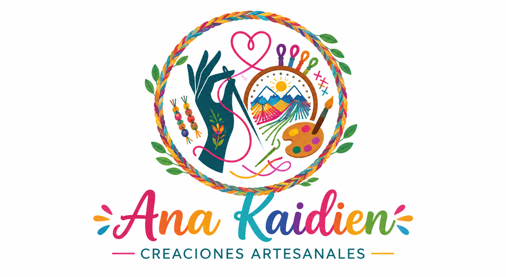

Hecho a mano, hecho con amor.
Los pequeños detalles crean recuerdos imborrables
Descubre piezas únicas creadas con creatividad, dedicación y mucho cariño.
Ver productos
HECHO A MANO
Nuestras creaciones
Cada pieza es elaborada con dedicación, creatividad y un toque único.
📿
Pulseras
Diseños únicos hechos a mano.
🎉
Piñatas
Creaciones para momentos especiales.
🎨
Pinturas
Arte creado con imaginación.
🧵
Hiloramas
Diseños elaborados con hilo.
👕
Ropa artesanal
Ropa pintada y bordada con chaquira.
🔑
Llaveros
Llaveros personalizados hechos a mano.
🏺
Figuras de arcilla
Figuras moldeadas con detalle y cariño.
🍮
Gelatinas
Gelatinas artísticas para toda ocasión.